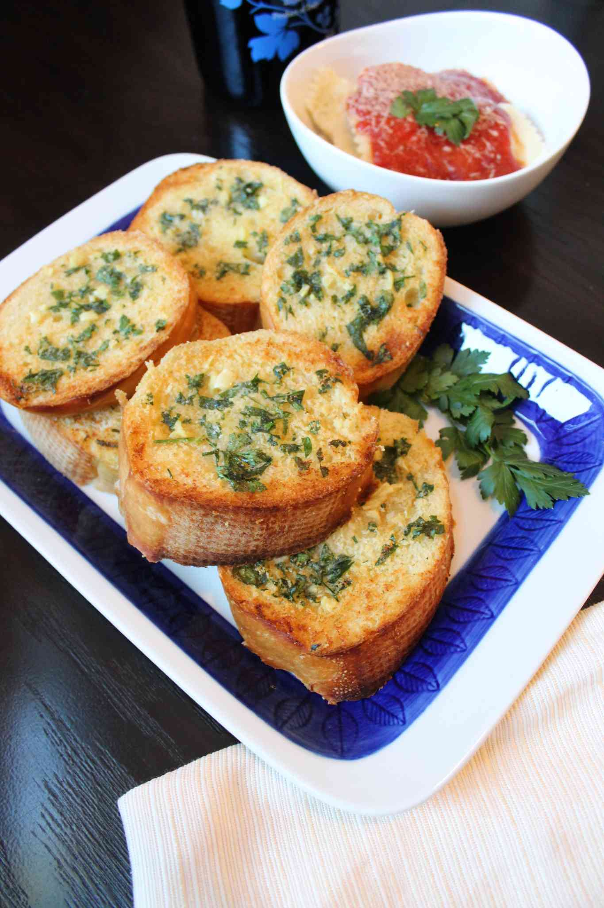

Garlic Bread

If you're a garlic lover this garlic bread recipe's for you! Garlic, butter, olive oil, and freshly baked bread-what else can you ask for? Try this recipe today--you won't regret it!
Ingredients
- ½ cup butter, softened
- 3 tablespoons olive oil
- 4 cloves garlic, minced
- 1 tablespoon garlic powder
- 1 tablespoon chopped fresh parsley
- ½ teaspoon salt
- 1 loaf French bread